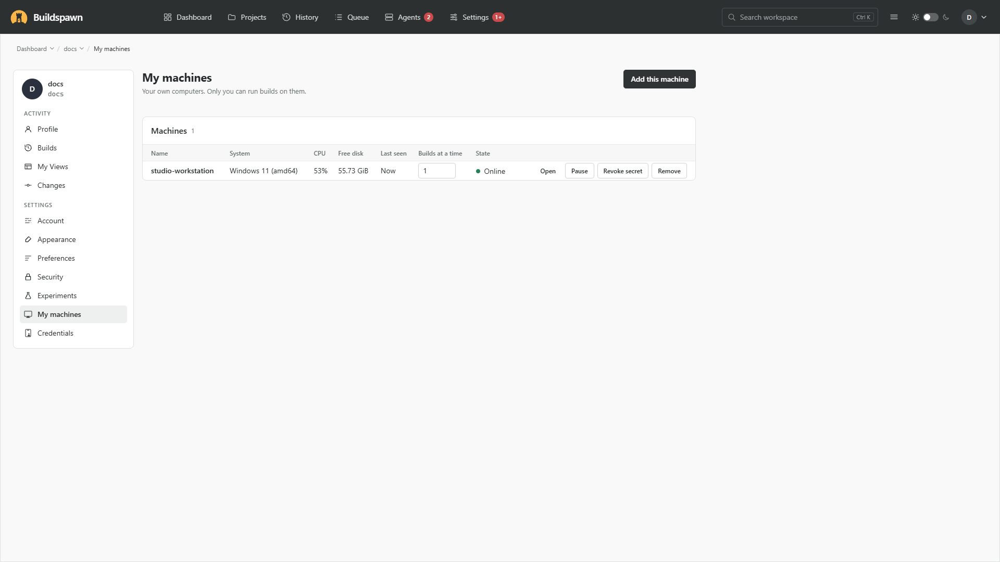
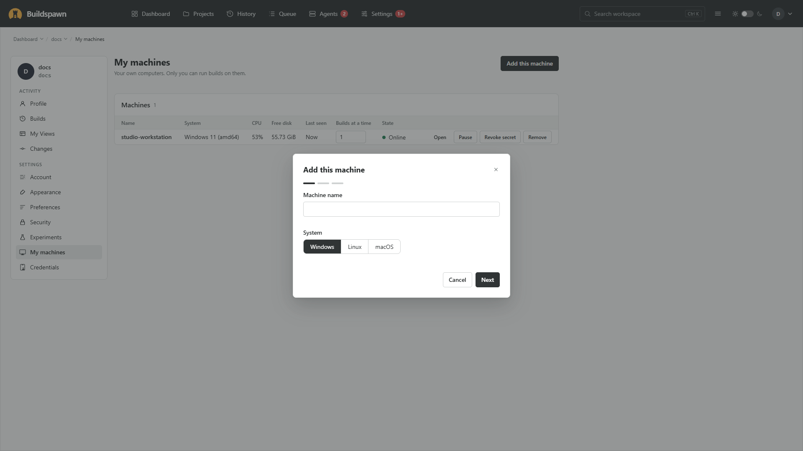
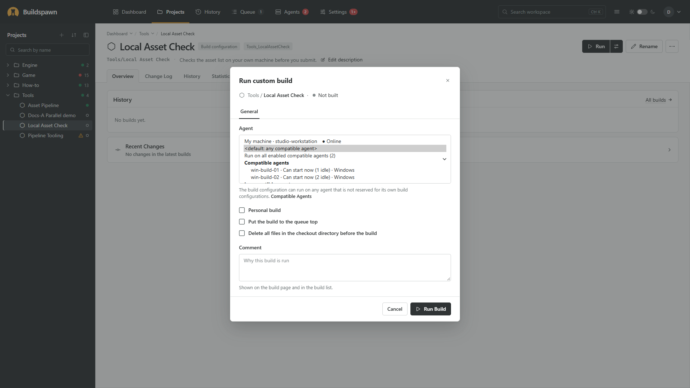

Personal agents
A personal agent is your own computer, connected to Buildspawn so that you can run a build on it. Only you can build there. Use it to try a build configuration, or to check a shelf, on your own hardware before the change goes to the build farm.
When to use it
Use a personal machine when a build needs your hardware (your graphics card, your devkit) or when you do not want to wait for a free farm agent. The most common use in a game studio is the shelf check: you shelve your Perforce change, then build it on your own PC to see that it compiles and cooks before you submit.
How personal machines work
- Each personal machine has one owner. Only builds that the owner starts by hand run on it.
- Nothing automatic lands on it: triggers, schedules, finished-build chains and other people's builds never use a personal machine.
- Other users do not see it in the Run dialog. Only the owner and administrators see it.
- A build on a personal machine is a personal build. It does not change the status of the build configuration, is never the "last successful" build, and starts no other builds. See Personal builds.
- The Pool Scheduler never moves a personal machine (see The Pool Scheduler), and it shows as Personal on the board.
- The agent connects out to the server over WebSocket. There is no port to open on your side.
Before you start
- An administrator must turn personal machines on (see Allow personal machines below). It is off by default.
- You need the permission Use a personal machine.
How to add your machine
- Open your user menu in the top bar and click My machines.
- Click Add this machine.
- Type a Machine name, for example
dana-pc. If an agent with that name exists, the page says There is already an agent named dana-pc. Choose another name. - Pick the System: Windows, macOS or Linux. Click Next.
- Step 1. Download: download the agent made for this machine. Unzip it and start it (on Windows run
bin\Buildspawn Agent.exefrom the folder, see Windows tray app). It connects by itself. - Step 2. Your secret: the secret is shown once. Click Copy if you need it for a manual start. You won't see this again. Revoke it any time.
- The page says Waiting for dana-pc to connect… and changes to dana-pc is connected. Click Done.
If the server has no agent download set up, the dialog says so and tells you to start the agent you already have with the secret shown.


The My machines page
The page says Your own computers. Only you can run builds on them. It lists your machines with these columns:
| Column | What it shows |
|---|---|
| Name | The machine's name. Click it to open the machine. |
| System | Operating system. |
| CPU | Number of cores. |
| Free disk | Free space in the work folder. |
| Last seen | How long ago the machine was last online, or Never. |
| Builds at a time | How many builds may run on it at once. Default 1. You can change it. |
| State | Online, offline, paused or stopped. |
| Actions | Pause, Resume, Revoke secret, Remove. |
An administrator sees the machines of other users too, headed Computers that belong to NAME. Only NAME can run builds on them.
One machine
Open a machine to see its status, CPU, free disk and these parts:
| Part | What it does |
|---|---|
| Builds at a time | Raise or lower the number of builds that run together. |
| Pause / Resume | Stop new builds on this machine. The running one finishes. Use it when you need your CPU. |
| Revoke secret | Asks Revoke secret for NAME? The agent on that machine disconnects. It connects again only with the new secret, which you see next. |
| Remove | Asks Remove NAME? This deletes the machine and its secret. Builds waiting for it are cancelled. |
| Workspaces per build configuration | Choose where each build configuration builds here. See below. |
| Allowed credentials | Read only list of the credentials this machine may use. An administrator chooses them. No credentials are allowed on personal machines. when the list is empty. |
| My builds on this machine | Your builds here, with result and time, and a Share link for each. |
Workspace options
A game project can be hundreds of gigabytes, so you choose where it builds. In Workspaces per build configuration, pick a build configuration (Choose a build configuration / Add build configuration) and set its Workspace:
| Choice | What it does |
|---|---|
| Own copy (first sync is full) | The agent makes its own client and folder. The first sync is full, and later syncs are small. This is the default and the safest. |
| My synced folder | The build uses a folder you have already synced. Fill in Synced folder (for example D:\Work\Game) and Client (your Perforce client, for example dana_LG-PC). The agent unshelves into it and reverts after the build. The folder is never cleaned up or wiped. |
My synced folder is safe only if the client has no open files. The agent unshelves into it and reverts after the build, and it skips the revert when the workspace has other open files. Check that nothing is open before you use it.
Clean on a row empties the build's own workspace. It needs the machine to be online (The machine is offline, so the folder can't be cleaned now.). Click Save to keep the choice.
Run on my machine
- Open the build configuration and click Run.
- In Run on, choose My machine · dana-pc. It shows Online or Offline, and Only you can see this option. It also shows Builds at a time: 1 · 0 running.
- Click Run. The build is a personal build, started on your machine.

On the build it says Ran on dana-pc (your machine). An administrator sees the owner's name instead, for example Ran on dana-pc (dana.k's machine).
If the machine is offline
The build waits for your machine, and only for it. The queue says Waiting for your machine 'dana-pc' (offline). Cancelled in 30 min if it doesn't connect. After the time set by the administrator, it is cancelled with Cancelled: your machine 'dana-pc' was offline for 30 min.
If a credential is not allowed
The Run dialog warns when the build configuration uses credentials that are not allowed on personal machines: This build configuration uses NAME, which isn't allowed on personal machines. The build will stop before it starts. A personal machine is hardware you control, so a secret sent to it could be read. Ask an administrator to allow the credential, or run on a farm agent.
Shelf checks
A shelf check runs your shelved Perforce change on your own machine. The agent syncs the workspace, unshelves your shelf and resolves it with the stale-shelf rules, builds, and reverts the shelved files afterwards.
- Shelve your change in Perforce.
- Open the build configuration, open the Shelves tab and pick the shelf (or several shelves).
- Run the build on My machine (see above).
- The build page shows Shelf check · CL 48213 · unshelved and resolved.
- If it passes, submit your change. If it fails, fix it and shelve again.
See Check a shelf before you submit for the personal-build flow on the farm.
Share a build
Personal builds are hidden from other people. To let a colleague read one, click Share on the build (also in the tray app and the terminal program). It copies a link. Whoever opens the link can read that build, its console, its artifacts and its test results, and nothing else.
Credentials on personal machines
By default no credential is sent to a personal machine. An administrator turns it on for each credential with the Allowed on personal machines switch in the credential's form (it shows as a Personal machines tag in the list). The setting is kept outside the credential and only administrators can change it. A build that needs a credential that is not allowed stops before it starts, with a message that names it. Users who hit the block can ask an administrator from the Run dialog.
Settings › Security › Personal machines
Administrators set the rules here.
| Field | What it does | Default | Example |
|---|---|---|---|
| Allow personal machines | Users can connect their own computer and run their own builds on it. When off, the machines stay on the My machines page but take no builds. The page says Personal machines are turned off by an administrator. | Off | On |
| Offline machine: cancel waiting builds after | A build waits for its owner's machine only. After this many minutes it is cancelled and says why. It must be at least 1. | 30 minutes | 20 |
A line under the fields says: Who may add a machine: the permission "Use a personal machine", under Agents in the permission table. That permission is named UsePersonal. Give it in Settings › Security › Authorization or in a role (see Authorization and Roles). If a user loses the permission, the queue says NAME may no longer use a personal machine, so MACHINE takes no builds.
In the node properties of an agent, the owner is kept in a hidden property. It does not appear in the agent's Configure page. The agent's Parameters page shows agent.type = personal and agent.owner.
A worked example
Dana works on the Forest level and uses Unreal Engine with Perforce. A full cook on the farm takes 40 minutes, and the farm is busy before a milestone.
- An administrator ticks Allow personal machines and gives Dana's group the
UsePersonalpermission. - Dana adds
dana-pcfrom My machines, and starts the agent with the tray app. - For
Game / Windows Build, Dana picks My synced folderD:\Work\Gamewith clientdana_LG-PC, because that folder is already synced and has no open files. - Dana shelves change 48213, opens the Shelves tab and runs it on My machine · dana-pc.
- The build passes with Shelf check · CL 48213 · unshelved and resolved. Dana submits.
What you see when it runs
- On the Agents page, the machine has a Personal mark with the owner. Only the owner and administrators see it.
- The build has a Personal chip. It does not appear in other users' lists.
- The tray app on the machine shows Owner and only your builds, with Share.
Problems and fixes
| Problem | What to do |
|---|---|
| You see no My machines link, or You can't add a personal machine. | Personal machines are off, or you lack the UsePersonal permission. Ask an administrator. |
| The build waits and is then cancelled. | Your machine was offline. Start the agent and run again. |
| The build stops before it starts and names a credential. | The credential is not allowed on personal machines. Ask an administrator. |
| A trigger did not use your machine. | By design. Personal machines take only builds you start by hand. |
| The machine stays offline after Revoke secret. | Start the agent with the new secret, or download the agent again from My machines. |
| Your machine does not appear in the Run dialog. | Check that it is online and that your account owns it. |